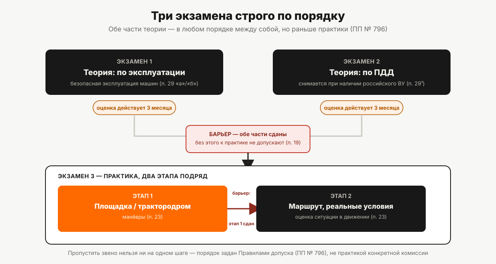

Экзамен в гостехнадзоре: как он устроен
Два теоретических экзамена и один практический, строго в заданной последовательности. Что проверяют на каждом, сколько действует сданная теория и кого не допустят вовсе.
У водителей автомобилей — теория и практика, два экзамена. На право управления самоходными машинами их три, и порядок между ними не предмет выбора: сначала обе части теории, и только потом практика, причём практику точно так же нельзя начать со второго этапа, минуя первый. Вот из чего складывается экзамен целиком — по Правилам допуска к управлению самоходными машинами (постановление Правительства РФ от 12.07.1999 № 796).

Три экзамена и их официальные названия
Пункт 18 Правил допуска называет экзамены дословно и в заданном порядке:
- по эксплуатации самоходных машин (в части безопасной эксплуатации) — теория. Формулировка действует для всех категорий, кроме F, и для тех, кто не получает квалификацию «тракторист-машинист»;
- по эксплуатации самоходных машин, сельскохозяйственных машин и оборудования — теория, для категории F и для тех, кто получает квалификацию «тракторист-машинист» (расширенный вариант первого экзамена, а не третий отдельный);
- по правилам дорожного движения — теория;
- комплексный (по практическим навыкам вождения, безопасной эксплуатации машин и правилам дорожного движения) — практика.
Формально в норме перечислено четыре позиции, но первые две — варианты одного и того же экзамена по эксплуатации, применяемые в зависимости от категории и квалификации: кандидат сдаёт либо один, либо другой, не оба сразу. Поэтому по факту кандидат проходит ровно три экзамена: теорию по эксплуатации (в одном из двух вариантов), теорию по ПДД и комплексную практику.
Порядок: почему нельзя начать с практики
Пункт 19 Правил допуска формулирует это без оговорок: кандидат, не сдавший теоретический экзамен, к практическому экзамену не допускается. То же самое действует и внутри практики: пункт 22² прямо запрещает переход ко второму этапу практического экзамена (движение в реальных условиях эксплуатации), если не сдан первый этап (закрытая площадка или трактородром).
Получается цепочка из трёх последовательных барьеров: теория по эксплуатации и ПДД → первый этап практики → второй этап практики. Пропустить звено нельзя ни при каких условиях, прописанных в норме.
Что проверяют на теории
На теоретическом экзамене по эксплуатации проверяются семь блоков знаний — от правил безопасной эксплуатации до методов первой помощи и Правил дорожного движения (пункт 29 Правил допуска). Отдельно предусмотрено освобождение владельцев российского национального водительского удостоверения от блока про ПДД: эти знания считаются уже подтверждёнными. Полный перечень блоков, форма сдачи и то, что именно означает освобождение от ПДД на практике, — в статье «Теория в гостехнадзоре: билеты и порог сдачи».
Что проверяют на практике
Комплексный практический экзамен принимается в два этапа: сначала манёвры на закрытой от движения площадке или трактородроме, затем — вождение и оценка эксплуатационной ситуации на специальном маршруте в реальных условиях (пункт 23 Правил допуска). Полный перечень манёвров первого этапа, требования к экзаменационной технике и порог сдачи — в статье «Практический экзамен на самоходной машине».
Сколько действует сданная теория
Оценка, полученная на теоретических экзаменах, считается действительной в течение 3 месяцев (пункт 20 Правил допуска). Это не то же самое, что интервал между попытками пересдачи — семь дней, о которых речь пойдёт ниже. Трёхмесячный срок отвечает на другой вопрос: сколько времени есть на то, чтобы после сдачи теории успеть сдать практику, не пересдавая теорию заново. Что происходит, если этот срок истёк, а практика ещё не сдана, — разобрано в статье «Что делать, если не сдал экзамен».
Кто принимает экзамен: требования к экзаменатору
Экзамен принимает государственный инженер-инспектор органа гостехнадзора — и норма прямо задаёт требования к нему (пункты 13–14 Правил допуска):
- возраст не менее 23 лет;
- документ о высшем (техническом) или среднем профессиональном (техническом) образовании;
- собственное удостоверение тракториста-машиниста на право управления машинами тех категорий, по которым он принимает экзамен.
Последнее требование логично: принимать экзамен на категорию, на управление которой у самого экзаменатора нет права, нельзя.
Кто ещё может присутствовать
Правила допуска отдельно допускают присутствие на экзамене представителей организаций, осуществляющих образовательную деятельность, военных комиссариатов, воинских частей, военно-учебных заведений и других организаций (пункт 13). Список открытый («и других организаций»), но привязан именно к представителям организаций, а не к произвольным сопровождающим кандидата.
Что оформляют: карточка и протокол
Перед сдачей экзаменов кандидат заполняет индивидуальную карточку, если она не выдавалась раньше, и представляет её вместе с документом, удостоверяющим личность, экзаменатору (пункт 17). Результаты экзаменов заносятся в протокол (пункт 27). Оба документа — часть процедурного следа экзамена, отдельного от учебных материалов и документа о квалификации.
Отказ в допуске и как его обжалуют
Если кандидата не допускают к экзаменам, орган гостехнадзора обязан письменно сообщить об этом с указанием причин отказа (пункт 28). Причины отказа, как и результаты уже пройденных экзаменов, можно обжаловать — в административном и судебном порядке. Норма не детализирует саму процедуру обжалования дальше этой общей формулировки; в части оснований, по которым вообще не допускают к экзамену, — отдельная статья «Как получить права тракториста», раздел про шесть оснований недопуска.